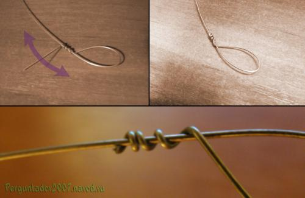
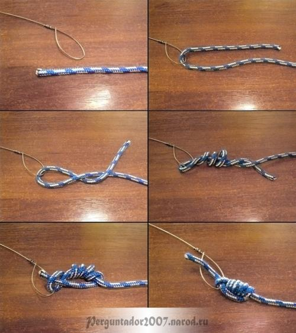

Беримбау. Две маленькие хитрости
Всем привет!
Сегодняшняя тема посвящена небольшим хитростям, связанным с приготовлением струны (arame) для беримбау.
Я дам два практических совета, одним из которых пользуюсь очень давно, а второй пришел мне в голову на днях и был с успехом испробован на практике.
Возможно кто-то сочтет мои советы малозначимыми, но я искренне надеюсь, что найдется тот, кому они пригодятся.
Итак…
Совет №1
Очень часто приходится видеть, как при изготовлении петель на струне капоэйристы пользуются кусачками. Да, это без сомнения быстрый способ, однако у него есть два существенных недостатка.
1) Возле петли остается небольшой торчащий фрагмент струны, который при неаккуратном использовании беримбау, например при натяжении последнего, может порезать кожу на руках. Это не только неприятно, но и чревато заражением гепатитами В и С, столбняком и т.п.
2) Способ требует наличия кусачек, которые не всегда могут оказаться под рукой.
Для того, чтобы избежать вышеописанных недостатков, воспользуйтесь методом, о котором когда-то рассказал наш mestre Rui, за что ему огромное спасибо. Суть метода в следующем: оставшийся после закручивания петли кусок струны гните поочередно вправо-влево по направлению вдоль струны, пока он не обломается. Такой метод практически не оставляет острого «хвоста».

Совет №2
Часто во время игры на беримбау струна его рвется, и возникает потребность в ее быстрой замене. Если же другого беримбау под рукой не оказалось, то начинается утомительная работа по отвязыванию веревки от струны. А привязанную несколькими простыми узлами веревку, которая к тому же побывала в натяжении, можно отвязывать долго и мучительно.
Чтобы сэкономить время, силы и нервы, которых никогда не бывает много, я рекомендую пользоваться „захватным узлом“ (процесс вязания данного узла и сам узел – на фото) с единственным условием – не затягивайте узел очень сильно.

Преимущества «захватного узла» очевидны:
- очень надежный узел;
- прост в эксплуатации;
- при необходимости легко завязывается/развязывается;
- эстетичен (красивее, чем 3-4 последовательно завязанных «простых» узла).
Кроме того, зная «захватный узел», вы сможете восполнить необходимые спортсменам запасы белков, витамина D и фосфора, привязав крючок к леске и сходив на рыбалку. ;)
Ну, вот, пожалуй, и все.
Читайте, экспериментируйте и получайте удовольствие пускай даже от самых незначительных мелочей, из которых, по большому счету, и состоит наша с вами жизнь! ;)